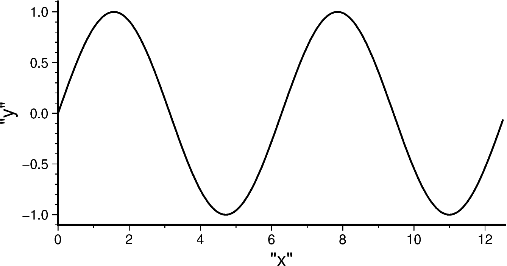

xyグラフの描画
Contents
xyグラフの描画#
PyGMTは本家GMTと同じく，投影法（projection）に X を選ぶことで，直交座標系のXYグラフを作成することができます．
ここでは，データ作成や比較のためにNumPyとmatplotlibも使います．
import pygmt
import numpy as np
import matplotlib.pyplot as plt
関数グラフ#
まずはデータを作成してみましょう．
x = np.arange(0, 4*np.pi, np.pi/50)
y = np.sin(x)
fig.plotでpenを指定すると曲線が描画できます．
fig = pygmt.Figure()
fig.plot(region = [0, 4*np.pi, -1.1, 1.1],
projection = 'X10c/5c',
x = x, y = y,
pen = 'thick,black',
frame = ['WS', 'xaf+l"x"', 'yaf+l"y"'])
fig.show()

plotを重ねていくことで様々なグラフを重ね描きできます：
fig = pygmt.Figure()
fig.basemap(region = [0, 4*np.pi, -1.1, 1.1],
projection = 'X10c/5c',
frame = ['WS', 'xaf+l"x"', 'yaf+l"y"'])
fig.plot(x = x, y = np.sin(x), pen = 'thick,200/100/100', label="sin(x)")
fig.plot(x = x, y = np.cos(x), pen = 'thick,100/100/200', label="cos(x)")
fig.legend()
fig.show()
ここでは，fig.legend() を用いて凡例を表示しました．plotなどでlabelオプションにより名前をつけておけば，legend()は引数なしで自動的に右上に凡例を表示してくれます．位置や表現を調整したいときにはマニュアルを参考にオプションを追加するのが良いでしょう．
シンボルのプロット#
plot()に style オプションを追加することで，シンボルや（固定サイズの場合は）サイズの指定を行います．style指定がないと，plotはデータとして与えられた点をつないだ線を描画します．
シンボルはGMT公式ドキュメントの以下の図の通りです：

x y 座標を乱数（np.random.rand）によって生成してプロットを行ってみましょう：
n = 50
fig = pygmt.Figure()
# シンボルの種類と色
symb = ['c', 'a', 'i', 't', 's', 'd']
col = ['red', 'blue', 'purple', 'orange', 'darkgreen', 'pink']
name = ['circle', 'star', 'inv. triangle', 'triangle', 'square', 'diamond']
fig.basemap(
projection = 'X10c/10c',
region = [0, 5, 0, 5],
frame = ['WS+t"randomly distributed symbols"', 'xaf', 'yaf']
)
for i in range(len(symb)):
dat = 5 * np.random.rand(n,n)
fig.plot(
data = dat,
style = symb[i] + '0.4c',
color = col[i] + '@70',
pen = 'default,black',
label = name[i]
)
fig.legend(transparency=20)
fig.show()